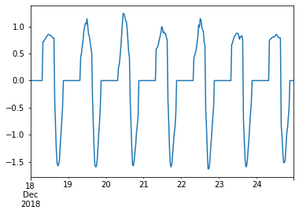

Christmas¶
#exports
import numpy as np
import pandas as pd
import os
from sklearn.ensemble import RandomForestRegressor
from batopt import clean, discharge, charge, constraints, pv
import FEAutils as hlp
import matplotlib.pyplot as plt
User Inputs¶
raw_data_dir = '../data/raw'
intermediate_data_dir = '../data/intermediate'
Christmas Model EDA¶
We'll start by loading in the combined training dataset
df = clean.combine_training_datasets(intermediate_data_dir).interpolate(limit=1)
df.head()
| demand | pv | weather | demand_MW | irradiance_Wm-2 | panel_temp_C | pv_power_mw | solar_location1 | solar_location2 | solar_location3 | solar_location4 | solar_location5 | solar_location6 | temp_location1 | temp_location2 | temp_location3 | temp_location4 | temp_location5 | temp_location6 | holidays | |
|---|---|---|---|---|---|---|---|---|---|---|---|---|---|---|---|---|---|---|---|---|
| 2015-01-01 00:00:00+00:00 | nan | nan | nan | nan | nan | nan | nan | 0 | 0 | 0 | 0 | 0 | 0 | 9.75 | 9.65 | 8.83 | 7.58 | 11.62 | 11.22 | nan |
| 2015-01-01 00:30:00+00:00 | nan | nan | nan | nan | nan | nan | nan | 0 | 0 | 0 | 0 | 0 | 0 | 9.83 | 9.705 | 8.865 | 7.6 | 11.635 | 11.27 | nan |
| 2015-01-01 01:00:00+00:00 | nan | nan | nan | nan | nan | nan | nan | 0 | 0 | 0 | 0 | 0 | 0 | 9.91 | 9.76 | 8.9 | 7.62 | 11.65 | 11.32 | nan |
| 2015-01-01 01:30:00+00:00 | nan | nan | nan | nan | nan | nan | nan | 0 | 0 | 0 | 0 | 0 | 0 | 9.95 | 9.78 | 9 | 7.615 | 11.65 | 11.31 | nan |
| 2015-01-01 02:00:00+00:00 | nan | nan | nan | nan | nan | nan | nan | 0 | 0 | 0 | 0 | 0 | 0 | 9.99 | 9.8 | 9.1 | 7.61 | 11.65 | 11.3 | nan |
We'll now create our charge/discharge baseline for 2018
test_start_date = '2018-12-18'
test_end_date = '2018-12-24 23:59'
discharge_opt_model_fp = '../models/discharge_opt.sav'
pv_model_fp = '../models/pv_model.sav'
model_params = {
'criterion': 'mse',
'bootstrap': True,
'max_depth': 32,
'max_features': 'auto',
'min_samples_leaf': 1,
'min_samples_split': 4,
'n_estimators': 74
}
X, y = pv.prepare_training_input_data(intermediate_data_dir)
if test_start_date is not None and test_end_date is not None:
pred_index = X[test_start_date:test_end_date].index
X = X.drop(pred_index)
y = y.drop(pred_index)
pv.fit_and_save_pv_model(X, y, pv_model_fp, model_class=RandomForestRegressor, **model_params)
s_charge_profile = pv.optimise_test_charge_profile(raw_data_dir, intermediate_data_dir, pv_model_fp, test_start_date=test_start_date, test_end_date=test_end_date)
s_discharge_profile = discharge.optimise_test_discharge_profile(raw_data_dir, intermediate_data_dir, discharge_opt_model_fp, test_start_date=test_start_date, test_end_date=test_end_date)
s_battery_profile = (s_charge_profile + s_discharge_profile).fillna(0)
s_battery_profile.name = 'charge_MW'
s_battery_profile.plot()
<AxesSubplot:>

As well as the current year we're meant to be forecasting
test_start_date = None
test_end_date = None
discharge_opt_model_fp = '../models/discharge_opt.sav'
pv_model_fp = '../models/pv_model.sav'
model_params = {
'criterion': 'mse',
'bootstrap': True,
'max_depth': 32,
'max_features': 'auto',
'min_samples_leaf': 1,
'min_samples_split': 4,
'n_estimators': 74
}
X, y = pv.prepare_training_input_data(intermediate_data_dir)
if test_start_date is not None and test_end_date is not None:
pred_index = X[test_start_date:test_end_date].index
X = X.drop(pred_index)
y = y.drop(pred_index)
pv.fit_and_save_pv_model(X, y, pv_model_fp, model_class=RandomForestRegressor, **model_params)
s_charge_profile = pv.optimise_test_charge_profile(raw_data_dir, intermediate_data_dir, pv_model_fp, test_start_date=test_start_date, test_end_date=test_end_date)
s_discharge_profile = discharge.optimise_test_discharge_profile(raw_data_dir, intermediate_data_dir, discharge_opt_model_fp, test_start_date=test_start_date, test_end_date=test_end_date)
s_battery_profile = (s_charge_profile + s_discharge_profile).fillna(0)
s_battery_profile.name = 'charge_MW'
s_battery_profile.plot()
---------------------------------------------------------------------------
KeyError Traceback (most recent call last)
<ipython-input-9-81823d82d537> in <module>
24 pv.fit_and_save_pv_model(X, y, pv_model_fp, model_class=RandomForestRegressor, **model_params)
25
---> 26 s_charge_profile = pv.optimise_test_charge_profile(raw_data_dir, intermediate_data_dir, pv_model_fp, test_start_date=test_start_date, test_end_date=test_end_date)
27 s_discharge_profile = discharge.optimise_test_discharge_profile(raw_data_dir, intermediate_data_dir, discharge_opt_model_fp, test_start_date=test_start_date, test_end_date=test_end_date)
28
c:\users\ayrto\desktop\hackathons\wpd-ds-challenge\batopt\pv.py in optimise_test_charge_profile(raw_data_dir, intermediate_data_dir, pv_model_fp, test_start_date, test_end_date, start_time, end_time)
142 # Cell
143 def optimise_test_charge_profile(raw_data_dir, intermediate_data_dir, pv_model_fp, test_start_date=None, test_end_date=None, start_time='08:00', end_time='23:59'):
--> 144 df_features = charge.prepare_test_feature_data(raw_data_dir, intermediate_data_dir, test_start_date=test_start_date, test_end_date=test_end_date, start_time=start_time, end_time=end_time)
145 charging_datetimes = charge.extract_charging_datetimes(df_features)
146 X_test = df_features.loc[charging_datetimes]
c:\users\ayrto\desktop\hackathons\wpd-ds-challenge\batopt\charge.py in prepare_test_feature_data(raw_data_dir, intermediate_data_dir, test_start_date, test_end_date, start_time, end_time)
280
281 # Filtering feature data on submission datetimes
--> 282 df_features = df_features.loc[index].between_time(start_time, end_time)
283
284 return df_features
~\anaconda3\envs\batopt\lib\site-packages\pandas\core\indexing.py in __getitem__(self, key)
892
893 maybe_callable = com.apply_if_callable(key, self.obj)
--> 894 return self._getitem_axis(maybe_callable, axis=axis)
895
896 def _is_scalar_access(self, key: Tuple):
~\anaconda3\envs\batopt\lib\site-packages\pandas\core\indexing.py in _getitem_axis(self, key, axis)
1110 raise ValueError("Cannot index with multidimensional key")
1111
-> 1112 return self._getitem_iterable(key, axis=axis)
1113
1114 # nested tuple slicing
~\anaconda3\envs\batopt\lib\site-packages\pandas\core\indexing.py in _getitem_iterable(self, key, axis)
1050
1051 # A collection of keys
-> 1052 keyarr, indexer = self._get_listlike_indexer(key, axis, raise_missing=False)
1053 return self.obj._reindex_with_indexers(
1054 {axis: [keyarr, indexer]}, copy=True, allow_dups=True
~\anaconda3\envs\batopt\lib\site-packages\pandas\core\indexing.py in _get_listlike_indexer(self, key, axis, raise_missing)
1263 keyarr, indexer, new_indexer = ax._reindex_non_unique(keyarr)
1264
-> 1265 self._validate_read_indexer(keyarr, indexer, axis, raise_missing=raise_missing)
1266 return keyarr, indexer
1267
~\anaconda3\envs\batopt\lib\site-packages\pandas\core\indexing.py in _validate_read_indexer(self, key, indexer, axis, raise_missing)
1305 if missing == len(indexer):
1306 axis_name = self.obj._get_axis_name(axis)
-> 1307 raise KeyError(f"None of [{key}] are in the [{axis_name}]")
1308
1309 ax = self.obj._get_axis(axis)
KeyError: "None of [DatetimeIndex(['2020-07-03 00:00:00+00:00', '2020-07-03 00:30:00+00:00',\n '2020-07-03 01:00:00+00:00', '2020-07-03 01:30:00+00:00',\n '2020-07-03 02:00:00+00:00', '2020-07-03 02:30:00+00:00',\n '2020-07-03 03:00:00+00:00', '2020-07-03 03:30:00+00:00',\n '2020-07-03 04:00:00+00:00', '2020-07-03 04:30:00+00:00',\n ...\n '2020-07-09 19:00:00+00:00', '2020-07-09 19:30:00+00:00',\n '2020-07-09 20:00:00+00:00', '2020-07-09 20:30:00+00:00',\n '2020-07-09 21:00:00+00:00', '2020-07-09 21:30:00+00:00',\n '2020-07-09 22:00:00+00:00', '2020-07-09 22:30:00+00:00',\n '2020-07-09 23:00:00+00:00', '2020-07-09 23:30:00+00:00'],\n dtype='datetime64[ns, UTC]', name='datetime', length=336, freq=None)] are in the [index]"
fig, ax = plt.subplots(dpi=150)
for year in [2017, 2018]:
start_date = f'{year}-12-18'
end_date = f'{year}-12-24 23:59'
s_discharge = discharge.construct_discharge_s(df.loc[start_date:end_date, 'demand_MW'])
plt.plot(s_discharge.iloc[:48*7].values, label=f'{year}')
plt.plot(s_discharge_profile.iloc[:48*7].values, linestyle='--', label='2019 Prediction')
plt.legend(frameon=False, bbox_to_anchor=(1, 1))
hlp.hide_spines(ax)
for year in [2017, 2018]:
start_date = f'{year}-12-18'
end_date = f'{year}-12-24 23:59'
s_discharge = discharge.construct_discharge_s(df.loc[start_date:end_date, 'demand_MW'])
plt.plot(s_discharge.iloc[:48*7].values)